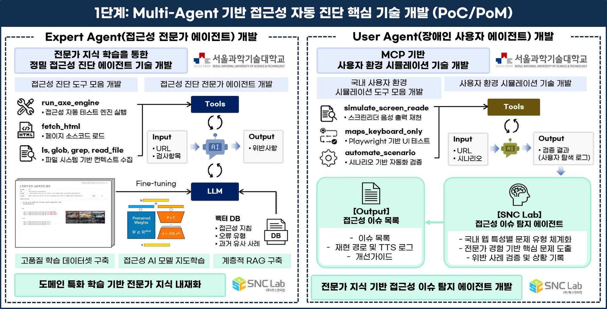

[Ongoing] 전문가 맥락 기반 Multi-Agent AI 기반 디지털 접근성 자동 진단 및 UI 자동 생성 기술 개발
공동연구책임자 / 2026.07.01 ~ 2027.03.31 / 민관공동기술사업화(R&D) (KRW 100 million)
전문가 맥락 기반 Multi-Agent AI 기반 디지털 접근성 자동 진단 및 UI 자동 생성 기술 개발 (Development of Expert-Context-Based Multi-Agent AI for Automated Digital Accessibility Diagnosis and UI Generation)
기간: 2026.04.01 ~ 2026.12.31
Funding: Public–Private Joint Tech Commercialization R&D (KRW 100 million)
본 연구는 (주)에스앤씨랩(주관)과 서울과학기술대학교 HAI Lab(공동)이 함께 수행하는 과제로, 접근성 전문가의 맥락적 판단과 장애인 사용자의 실제 이용 경험을 학습한 Multi-Agent AI를 개발하여 웹·앱·키오스크의 접근성 문제를 자동 진단하고 준수 UI를 자동 생성·수정하는 Human-in-the-Loop 기반 상용 서비스 플랫폼을 구축하는 것을 목표로 합니다. 1단계(PoC·PoM)에서는 ①14년간 축적된 1,500개 기관 진단 데이터 기반 Domain-Specific SFT와 계층적 RAG로 전문가 맥락 판단을 내재화한 Expert Agent, ②센스리더 출력 시뮬레이션과 키보드 전용 내비게이션 자동화로 장애인 사용자 환경을 재현하는 User Agent, ③두 에이전트를 통합한 자동 진단 시제품을 개발하고 KWCAG 2.2 주요 검사항목에 대한 PoC 검증과 기존 고객사 파일럿 테스트를 수행합니다. ④서울과학기술대학교 HAI Lab은 Expert·User Agent의 LLM 설계·학습·평가와 접근성 도메인 데이터의 모델 적용·성능 최적화를 담당합니다.
English Summary:
Conducted by S&C Lab (lead) and SeoulTech HAI Lab (co-research), this project develops a Multi-Agent AI that learns accessibility experts' contextual judgment and disabled users' real usage experience to automatically diagnose accessibility issues in web, app, and kiosk interfaces and to automatically generate and remediate compliant UI, building a Human-in-the-Loop commercial service platform. In Phase 1 (PoC·PoM), it develops ① an Expert Agent that internalizes expert contextual judgment via Domain-Specific SFT and hierarchical RAG over 14 years of diagnostic data from 1,500 institutions, ② a User Agent that reproduces disabled users' environments through screen-reader output simulation and keyboard-only navigation automation, and ③ an integrated automated-diagnosis prototype, validated through KWCAG 2.2 PoC and pilot tests with existing clients. ④ SeoulTech HAI Lab leads the LLM design, training, and evaluation of the Expert/User Agents and the model application and performance optimization for accessibility-domain data.
